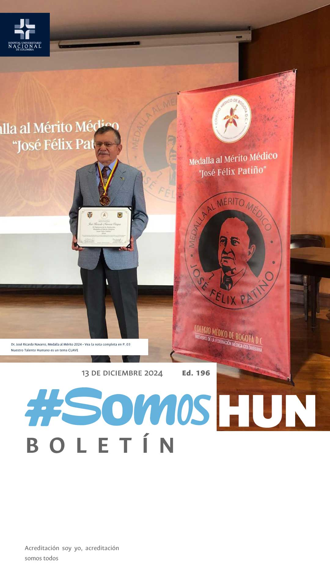
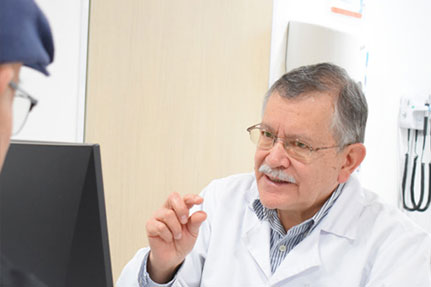
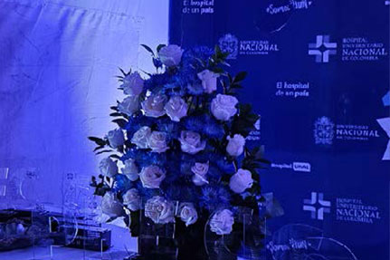
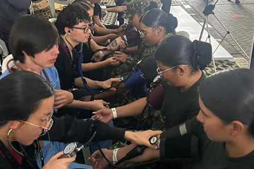
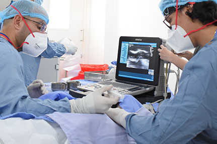

Ver todos los boletines
Dr. José Ricardo Navarro,
Medalla al Mérito 2024
La distinción Medalla al Mérito
Médico “José Félix Patiño”,
es un galardón creado en
2021 para honrar la memoria
del médico y académico colombiano
José Félix Patiño Restrepo, pionero
en la medicina Colombiana. Este
reconocimiento busca exaltar a aquellos
profesionales cuya práctica médica,
servicio a la comunidad y cualidades
humanas contribuyen significativamente
a la excelencia del gremio médico.Leer más

Exitosa II Noche
de
Reconocimientos
El pasado 03 de Diciembre al conmemorarse nuestro IX Aniversario de la apertura del hospital, se llevo a cabo el evento que reconoce a quienes llevan trabajando mas de 5 y 10 años en la organización y los procesos que mejores resultados obtienen alineados a PRECISO.Leer más
Myriam Johana Ortiz y Daniela
Buitrago
ganadoras del III viaje a
la Acreditación
Luego de 4 semanas muy
intensas de aprendizaje
para prepararnos frente a
la visita de acreditación,
tuvimos la oportunidad de reforzar
los conocimientos en la III Feria de la Acreditación, un espacio de 12 stand, que este año alcanzó en promedio 530 asistentes a cada stand y un total de 426 tiquetes depositados en la Urna.
Leer más

Participamos en
JOFI 2024
Acompañamos al Ejército
Nacional de Colombia con
la Brigada de Salud HUN.
Un equipo multidisciplinar
conformado por Enfermeras expertas
en Salud Pública, Salud Cardiovascular,
Promoción y Mantenimiento de la
salud, especialistas y residentes de
medicina del deporte, fisioterapeuta
y médica operativa de trasplante y el
acompañamiento de estudiantes de la
Facultad de Enfermería UNAL.
Leer más

Primera Tiroidectomia
por Radiofrecuencia en
el HUN
HUN
Primera Tiroidectomia
por Radiofrecuencia en
el HUN
#OrgulloHUN Esta semana realizamos por
primera vez ablación térmica de nódulos tiroideos
por radiofrecuencia, un Procedimiento
minimamente invasivo que permite tratar
nódulos benignos en pacientes sintomáticos.
Leer más